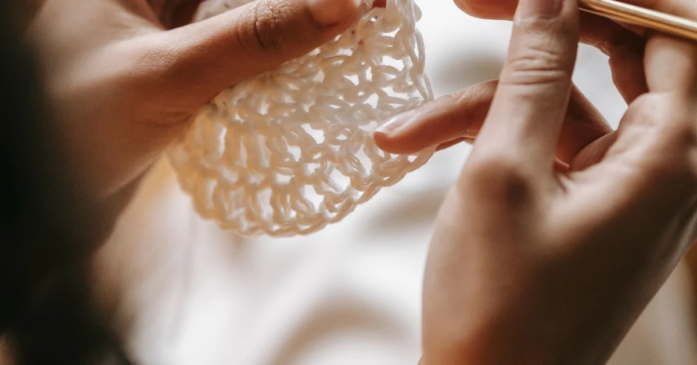
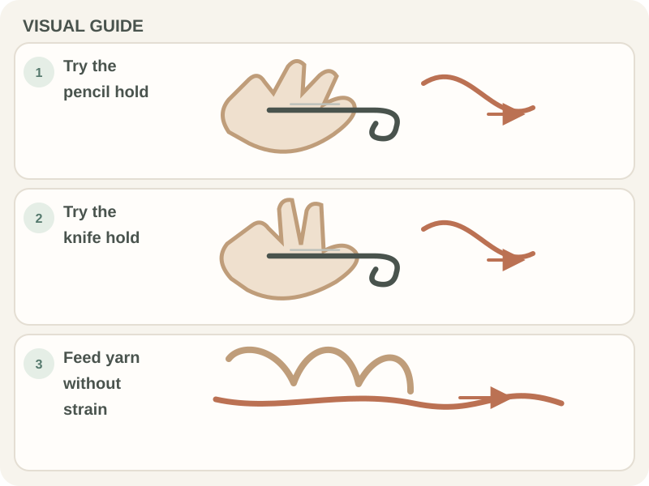

Crochet Basics · Beginner guide
How to Hold a Crochet Hook and Yarn as a Beginner
Find a hook-and-yarn hold that lets the hook turn freely and the yarn feed without pulling on your fingers.

A crochet hold is a starting position, not a test of flexibility. Your grip may change as you learn; the useful goal is controlled movement with relaxed fingers.
Before you begin
Use any hook and yarn that are easy to see. Keep the working strand connected to the ball and the tail separate. Pencil and knife holds are both common; neither is required.
Step-by-step instructions
- Rest the hook in your dominant hand as you would a pencil or dinner knife. Hold it lightly enough that the tip can rotate.
- Use the other hand to guide the yarn and support the fabric. Let the strand pass over a finger only if that feels comfortable.
- Make a short chain, then pause. Notice whether the hook catches the strand and whether your guiding hand can move the work.
- Adjust one finger or the amount of yarn passing through your hand at a time. Try a few stitches after each change.

What to check
Comfort is the checkpoint
The hook should turn to catch yarn, and the strand should slide with modest guidance. If your knuckles whiten, wrist bends sharply, or fingertips feel numb, pause and reset.
Frequently asked questions
Do I have to use a pencil or knife hold?
No. They are familiar options, but a comfortable variation is fine if you can make and control stitches.
How tightly should I hold the hook?
Firmly enough to guide it, loosely enough to rotate it without squeezing. Recheck your posture when your hand tires.
Can one grip prevent hand discomfort?
No single grip works for everyone. Change position when your hand tires, take breaks, and stop if you feel numbness or pain.
Start with a relaxed hand, not a fixed grip
A pencil hold rests the hook between fingers much like a writing tool; a knife hold places it more across the palm. Either can work, and many crocheters use a blend that feels natural. The point is not to copy a photograph exactly. Your hand size, hook handle, and the way you move your wrist all affect what feels comfortable. Start with the grip that lets you turn the hook head without clenching. If the hook keeps rotating out of position, adjust where your thumb supports it rather than squeezing harder with every finger.
Separate the hook hand from the yarn hand
The hook hand makes the insertion and pull-through movements. The other hand steadies the fabric and guides the working strand. Some crocheters wrap yarn over one finger; others pass it between two fingers or make only a light loop around a finger. Try a short chain with each arrangement. You should be able to feed yarn without pinching it so tightly that the hook cannot draw it through. Your yarn-guiding hand may also need to move the fabric closer to the hook as it grows, so avoid fixing it in one rigid position.
Use the hook head to do the work
A crochet hook has a throat that catches yarn and a head that passes through loops. A slight turn of the wrist can point the hook head toward the strand on the yarn-over, then rotate it back as you draw through. If the head repeatedly splits the yarn, pause and inspect its direction before pulling. The solution may be a smaller wrist turn, a different angle, or slower movement. You do not need to twist the whole forearm. Keeping the movement small makes it easier to see what the hook is doing.
Control yarn feed without pulling every stitch tight
Tension is the resistance that keeps loops consistent; it is not the same as holding yarn as tightly as possible. Let the strand slide through the guiding fingers, then use the hook to size each new loop. A useful practice is to make five chains, stop, and move the chain along the hook shaft. If the links are hard to bend or the hook will not enter them, the chain may be too tight. If loops fall off the hook, use a little more control. Change one finger position at a time so you know what helped.
Notice early signs that your setup needs a break
A beginner may concentrate so hard on the hook that the shoulders rise or the wrist bends sharply. Set the work down if your fingers feel numb, your wrist aches, or you notice yourself gripping harder as the row continues. Let the shoulders drop and bring the fabric closer to eye level instead of hunching over it. A short pause is more useful than pushing through discomfort. If pain persists or affects daily activity, stop and seek appropriate professional advice; crochet instructions cannot diagnose an injury.
Practice a small movement loop
Instead of trying to complete a large project immediately, practice the same small action in a swatch: insert the hook, catch yarn, and draw through. After several stitches, check whether the hook still rotates freely and whether the yarn has fed evenly. A smooth, medium-color yarn makes the loop easier to see, but use materials you already have if they are manageable. You can switch from chain stitches to a row of single crochet once you can guide the hook. The goal is repeatable control, not speed or perfectly identical stitches.
Takeaway: choose control and comfort
There is no single grip every crocheter must use. Keep the hook mobile, allow yarn to feed, and adjust your hands when the work becomes cramped. Compare the fabric and your comfort after a short practice row; if loops are too tight, loosen the yarn-hand path before changing everything else. If a grip causes discomfort, pause and try another. With a hook and yarn in hand, practice a short chain, then move to the slip-knot and foundation-chain lessons. A relaxed, adaptable hold gives you room to learn the stitches that follow.
Common mistakes and how to fix them
- Squeezing the handle. A tight fist limits the hook’s rotation. Hold it lightly and let the thumb and middle finger guide the handle.
- Clamping the yarn. Pinched yarn cannot slide smoothly. Let it pass through the guiding fingers with gentle resistance, adjusting one finger at a time.
- Pulling every loop tight. Tight loops make insertion and pull-through harder. Keep the loop on the wider shaft and check that the fabric can bend.
Tips that make it easier
- Try pencil and knife holds for a short chain, then choose the one that feels controlled and comfortable.
- Rest your forearms and bring the work closer to eye level to avoid hunching.
- Use smooth, light-colored yarn while learning if you have trouble seeing the strand.